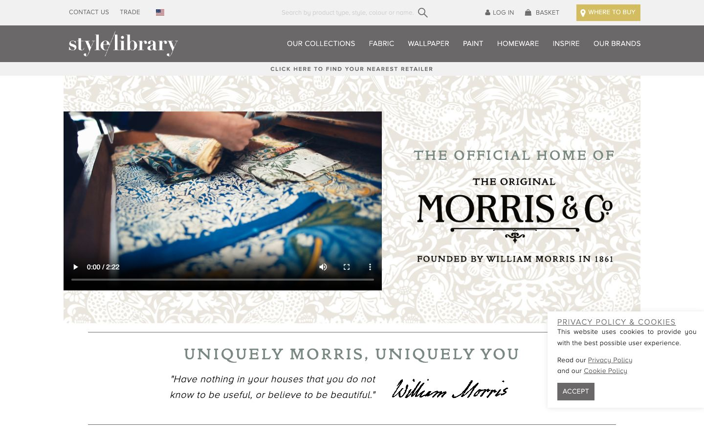

References / Website / 264
Morris & Co. website, 2020
The brand page of Morris & Co. inside the Style Library retail site, with a pale Strawberry Thief pattern behind the logo and serif capitals.
- Source
- Style Library: Morris & Co. (archived copy)
- Creator
- Morris & Co. (Sanderson Design Group)
- Made
- 2020
- Style
- Arts and Crafts (agent-proposed, not yet reviewed by a person)
- Moods
- Heritage, calm
- Evidence
- Captured with
tools/capture.mjs(headless Chrome, 1440 × 900) on 28 September 2026 and inspected. The screenshot shows the first viewport; the measurement covers up to four screens. Captured from the Wayback Machine copy of 2 January 2020. A cookie box covers the lower right corner, about 10% of the viewport. - Reviewed
- Rights
- Third-party work, stored with credit for commentary. License: unverified. Rights policy
The brand now has its own site at wmorrisandco.com, which blocked the capture tool with a bot check on 28 September 2026.
Observed
- A grey retail header for Style Library, with sans-serif capital navigation, sits above the brand content.
- A wide panel shows a Strawberry Thief-like pattern of birds and plants printed pale beige on off-white.
- A video of hands unfolding printed Morris fabrics fills the left half of the panel.
- On the right, spaced grey-green serif capitals read “THE OFFICIAL HOME OF”, above a black wordmark “THE ORIGINAL MORRIS & Co” with a rule and a small fleuron, and “FOUNDED BY WILLIAM MORRIS IN 1861”.
- Thin grey rules frame the heading “UNIQUELY MORRIS, UNIQUELY YOU” and a Morris quotation next to his signature.
Why it belongs
The measurement lists “GoldenTypeITCTT”, ITC Golden Type, a revival of the roman that Morris drew for the Kelmscott Press.
Measured: pattern share 0.06, zero chromatic hues, square corners, and uppercase share 0.21. The pale pattern carries the style; colour does not.
Borrow
Print the pattern tone on tone, in beige on off-white, when it must sit behind text.
Measured
Machine-extracted by tools/extract-traits.js on . Full measurement.
- Type families
- ProximaNovaA-Light (84%), GoldenTypeITCTT (9%), ProximaNovaA-Semibold (4%)
- Type scale ratio
- 1.14
- Median radius
- 0 px
- Mean chroma
- 0.01
- Palette
- #ffffff 61%
- #000000 15%
- #cbc9c7 6%
- #798981 5%
- #6a6869 4%
- #e8e4dd 4%
- #b2beb3 3%
- #f1f1f1 2%

